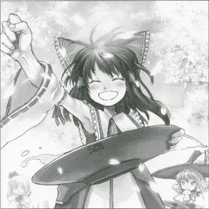
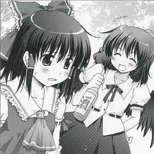

|
1st of the Deutzia Month (April), Season 120
>Flower Viewing Continues at the Shrine > Happy shouts of "It's already the fifth banquet this month!"X Month X Day, cherry blossoms are still in full bloom at the shrine. Around this time last year, summer was about to take spring's place, however, the cherry blossoms show absolutely no sign of clearing up. I believe there is something behind this anomaly, but it is nothing more than another one of the many minor incidents that occur in Gensokyo. Flower viewing takes place almost every night at the most magnificent shrine. To report this exciting event, I've made my way into the site of flower viewing and collected information. Humans, youkai, fairies, and a myriad of other species are enjoying themselves at the shrine. The only one person who was in a bad mood was the shrine maiden of this shrine, Reimu Hakurei (human). I took a direct interview with her to discover why she was in such a foul mood. "What? Why am I in a bad mood even though there's a banquet going on? It's because of the banquet, of course, the banquet. Everyone's making all the mess they want, then end up tired and go home without even cleaning up. Or are you saying you'll help me clean up?" I didn't want to help so I just poured her some of my sake and her mood took an instant turn for the better. It appears that she does not dislike drinking. The banquet is, as one would expect, bustling to the point of chaos. This time I decided asking a question from a different angle. The question was about the cherry blossoms that are still blooming. I asked whether she knew the incident or not, and why she, if she had already realized, wasn't doing anything about it. "Incident? You mean the cherry blossoms that are still here? Ah, I've already taken care of it. In three days, the cherry blossoms are definitely going to start clearing just like last year. Not just the cherry blossoms, but the other off-season flowers as well... It's not that the flowers bloom because they want to. Losing their place... let's not talk about this, how about a drink? We're not going to be able to enjoy flower viewing soon anyway." Lately, there didn't seem to be any significant incidents, so it's a surprise that it's already been taken care of. Reimu just seems to be a laid-back drunkard, but she's definitely the shrine maiden of Hakurei Shrine. Tonight, I was able to get more information about how Reimu resolved this by getting her to drink more. I would like to organize this information and report it in a few days. Gensokyo's most beautiful cherry blossoms are at Hakurei Shrine. The full bloom seems as if it's going to end soon, so why not visit the shrine while you still can?
(Aya Shameimaru)
|
|
 Reimu The heck. What's this weird dorky article? Aya Lately there haven't been any real incident-like incidents, so I didn't have a choice other than to write an article about this boring shrine. Reimu Don't call it boring. It's nice that it's peaceful. Aya And spaced out. Reimu No it's not! And besides, if you have nothing to write about you can write about my heroic tale of how I resolved that irregularity. Aya Well, your heroic tale there seems really fishy. Not that I need full coverage, but I'd at least need some evidence before I can turn it into an article. Reimu It's not a lie. Your newspaper is far more full of lies. Aya Those aren't lies. It's the complete truth. Reimu There's a saying that goes, "Repeat a lie a thousand times and it becomes truth." Aya What might you be saying? Reimu Not to mention, with the way you've written this article it seems like I'm just some drunkard. Aya You're more than enough of one. If anyone gave you sake you'd start telling them anything. Even stuff you'd normally rather not be. Reimu Uu. But you drank as much as I did, didn't you? How can you stay so level and write an article? Aya We tengu are great drinkers. Just the only ones that can match us would be... say, oni. Reimu Aah, geez. I can't remember what I said at all. And nobody cleaned anything up in the end. Aya You can't expect me to write an article of your heroic tale told while in that state. Reimu The heroic tale is true, though. Aya What about the herioc tales before this one? The Eternal Night Incident and the Scarlet Mist Incident and such and such. Reimu All true. Aya That's hard to believe. Really, unless I get some evidence, it's too risky for me to write an article about it. Reimu Then why not get some? I'm pretty sure you know who to ask. Aya Are you serious? Reimu ...Yeah, I don't think a single one of them would give a decent testimony. Aya Besides, using a drunkard's nonsense as a spark is still difficult. It won't even become a lead for material. Reimu It's not nonsense, already. Aya Even if you yourself don't remember what you said? You're kidding. Well, if I ever have a problem with article material, I might do it. Reimu Geez, everytime it comes to this sly crow it's this. Aya So, you're going to be doing flower viewing as well today, I assume. Reimu Probably the last one of the year. I'd like some preparation and clean up help for at least the last one. Aya Shall I assist you today? I'll pass on the bird stew, though. Reimu Eh? You're going to help? Aya However, you have to win a match against me. Reimu Piece of cake! So what are we competing in? Aya Drinking. Reimu Aaah, I wish someone would help. Profile: Reimu Hakurei The miko at Hakurei Shrine, which stands on the border between Gensoukyou and the outer world. She has no-double-dealing, frank personality, and she is looked up to by both human and youkai. Her occupation is to conquer youkai commiting a crime and to drink tea in the veranda. Appearances: All the works of Touhou series |
| [PREVIOUS ARTICLE : Rinnosuke] | [INDEX] | [NEXT ARTICLE : Scarlet mist Incident] |